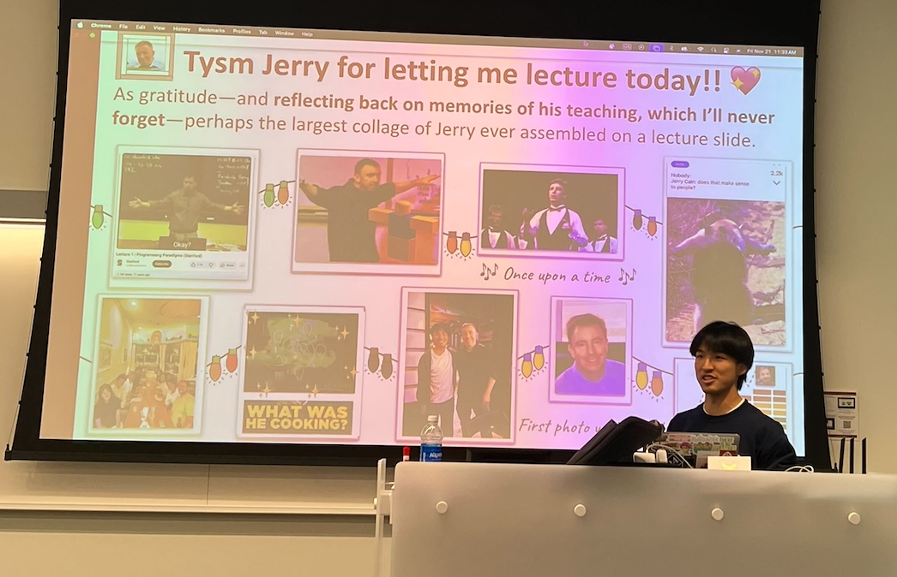

Hi there! I'm Ben, a CS MS student at Stanford University advised by Prof. Jerry Cain. I also did my undergrad at Stanford (2020-2024), completing a BS double major in CS and Math, and a Minor in Creative Writing. The winter of my senior year, I studied abroad at the University of Oxford, with a Tutorial in Creative Writing. In my free time, I enjoy manga and anime, and listening to soundtracks, K-pop, and J-rock music 🎸.
My name in Chinese is 颜斌 (Mandarin: Yán Bīn). The last name 颜 is a Western Zhou dynasty relic meaning color or face; my first name 斌 collates the Chinese radicals for writing (文) and martial (武), with the combined meaning of literary talent—lol, ironic.
Teaching 🧑🏫
I love teaching, and want to help make computer science education accessible and welcoming for everyone! At Stanford, I have the privilege of TAing in the CS198 program and teaching introductory programming (Python, JavaScript, C, Assembly languages), web applications, computer systems, and coding for social good.
This autumn quarter (winter and spring TBD), I'm excited to be teaching:
Programming Methodologies in JavaScript and Python
Head TA (🍁 Autumn 2025, Prof. Jerry Cain)
Previously, I've had the great pleasure of teaching:
Programming Methodologies in JavaScript and Python
Head TA (🍁 Autumn 2024, Prof. Jerry Cain)
Computer Organization and Systems
3x Teaching Assistant (☃️ Winter 2025, 🌱 Spring 2025, 🐬 Summer)
5x Lecturer/Section Leader (🍁 Autumn 2023, 🌱 Spring 2024, 🍁 Autumn 2024, ☃️ Winter 2025, 🌱 Spring 2025, Faculty Sponsor: Jerry Cain)
My last iteration of CS 106S (1-unit companion course to CS106B on social good applications) in Spring 2025 was super fun as always, and from course evaluations was somehow the highest-rated course in the entire CS department! I'm endlessly grateful and indebted to all my students, and they've taught me so much.
As an undergrad, I was also a Math Department SUMO peer tutor for two years, holding weekly, deadline-night office hours for MATH 18, 19, 20, 20, and 51 simultaneously.
Education 🏫
🌲 Stanford University
M.S. Candidate, Computer Science, Artificial Intelligence Track
Advisor: Prof. Jerry Cain.
🌲 Stanford University
B.S. Computer Science, Artificial Intelligence Track
B.S. Mathematics (Double Major)
Minor, Creative Writing, Prose Track
Advisor: Prof. Jerry Cain. Stanford CS + Social Good, SUMO, SciOly
🏴 University of Oxford
Brasenose College, Study Abroad, Hilary Term 2024
Tutorial in English Literature & Creative Writing. Brasenose Arts 🎭.
🌃 University of Minnesota, Twin Cities
Talented Youth Mathematics Program (UMTYMP) Graduate
Accelerated 5-yr sequence of HS math (6th-7th grade) & Calc I-III (8th-10th)
Honors 🎉
Stanford CS Graduate Teaching Assistantship, full funding for MS degree
National Novel Writing Month Winner, wrote two novels (50,000 words each) in one month (Nov 2023, as the project of my English 190E class)
U.S. Presidential Scholar, one of 161 graduating seniors selected in the U.S.
Research 🧪
Style-Aware Radiology Report Generation with RadGraph and Few-Shot Prompting
Empirical Methods in Natural Language Processing (EMNLP) Findings 2023
📝 Citations from Nature, Nature Medicine, ACL, Nature Communications
🔖 Visiting Research Fellow 2023 at Harvard Medical School, Rajpurkar Lab
B. Yan, R. Liu, D. Kuo, S. Adithan, E. Reis, S. Kwak, V. Venugopal, C. O’Connell, A. Saenz, P. Rajpurkar, M. Moor

Learning production functions for supply chains with graph neural networks
AAAI Conference on Artificial Intelligence 2025 (AI for Social Impact Track)
🎉 Oral Presentation—Top 5% of Papers
🔖 CURIS Summer Research Intern 2023, CS Senior Capstone Project
S. Chang, Z. Lin, B. Yan, S. Bembde, Q. Xiu, C.H. Wong, Y. Qin, F. Kloster, X. Luo, R. Palleti, J. Leskovec
Volunteering ✨
- 🌉 Golden Gate Science Olympiad — Event Supervisor for Remote Sensing (2023), Dynamic Planet (2024), Dynamic Planet (2025)
- 🌲 Stanford Science Olympiad — Event Supervisor for Astronomy (2023), Ecology (2024), Astronomy (2025)
- 🏞️ NorCal State Science Olympiad — Event Supervisor for Road Scholar (2024, 2025), Fossils (2024), Geologic Mapping (2024), Meteorology (2025)
Personal 🎨
Favorite Manga, Anime, Adaptations 📚
My all-time favorite anime and manga is Jujutsu Kaisen / 呪術廻戦, though Bocchi the Rock! / ぼっちざろっく! is a close second, with the spectacular Chainsaw Man / チェンソーマン at third. I've never seen a movie I liked more than Weathering with You / 天気の子 (2019) or Spirited Away / 千と千尋の神隠し (2001). I also like:


Miscellaneous Facts 🎲
- I'm deathly scared of heights, but love rollercoasters to death.
- My favorite food dish is 牛肉面 (beef noodle soup), drink is 🍵 matcha latte.
- My most-listened-to music artists include 🎶 YOASOBI, Blackpink, Radwimps, BABYMONSTER, IVE, Kenshi Yonezu, LiSA, Charli XCX, Dua Lipa, ITZY, BTS, and Olivia Rodrigo. Always looking for album or song recommendations!
- I'm bilingual in English & Mandarin Chinese, have been learning Japanese for about a year and a half, and just started learning Korean!